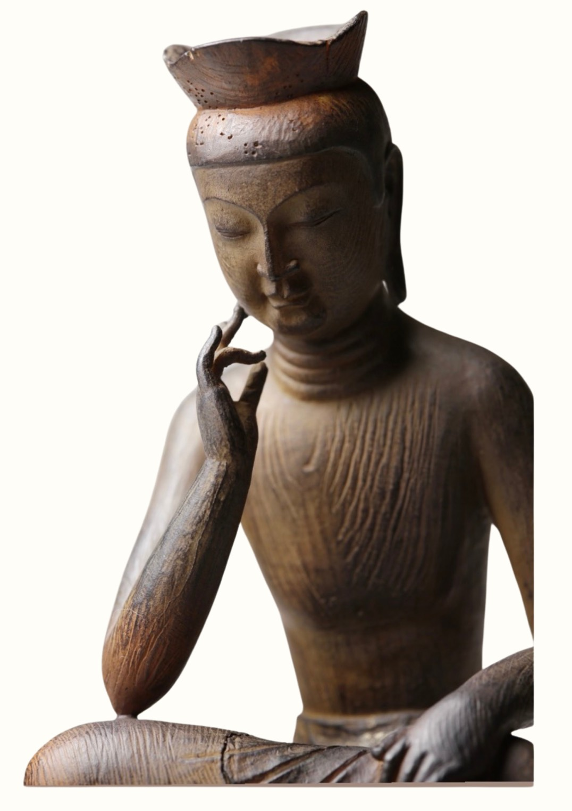
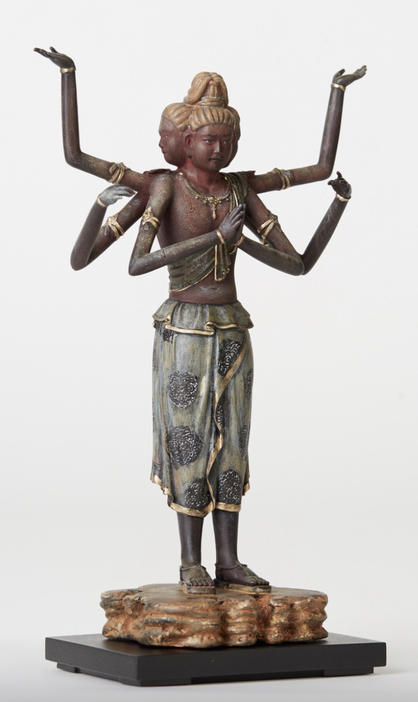
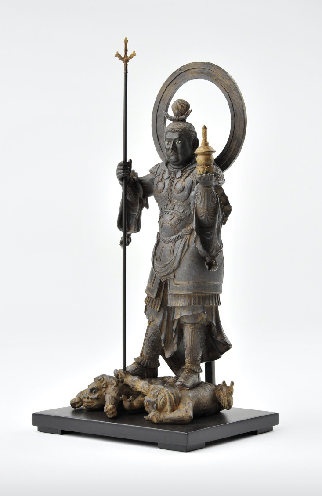
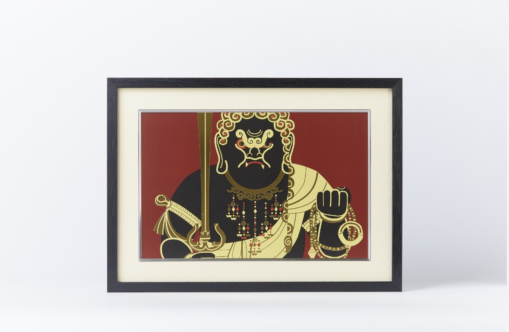
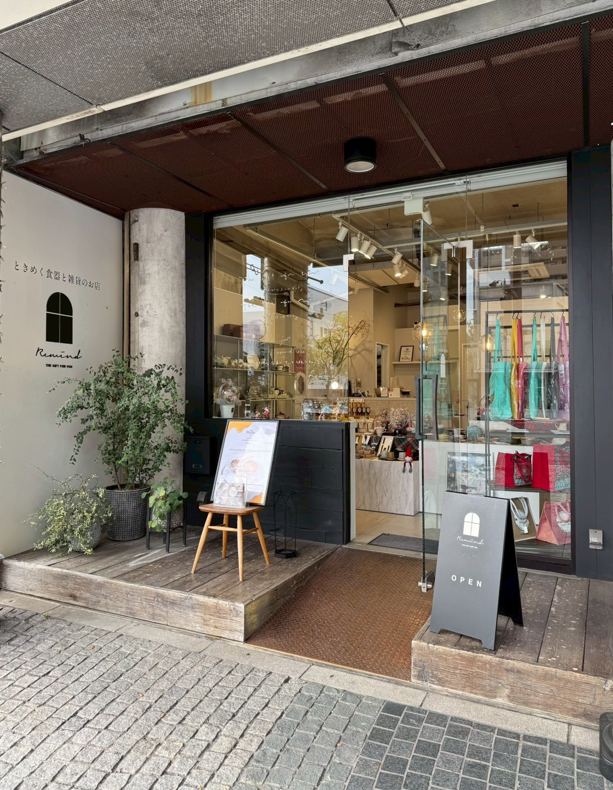

暮らしの中に、
静けさを飾る。
インテリア仏像ブランド「イスム」の
仏像・アート作品を、
和歌山のセレクト雑貨店 Remind で
ご覧いただけます。
期間限定ではなく、Remindの定番セレクトとしてご紹介しています。

インテリア仏像ブランド「イスム」の
仏像・アート作品を、
和歌山のセレクト雑貨店 Remind で
ご覧いただけます。
期間限定ではなく、Remindの定番セレクトとしてご紹介しています。
仏像というと、お寺や特別な場所にあるものという印象があるかもしれません。
でも、イスムの仏像は、日々の暮らしの中で楽しめるインテリアとして生まれたものです。
小さなサイズでありながら、細部まで丁寧に作り込まれた造形。
棚の上、デスク、玄関、リビング。
いつもの空間に置くだけで、そこに静かな余白が生まれます。
イスムは、仏像の美しさを現代の暮らしの中で楽しむためのインテリア仏像ブランドです。
TanaCOCORO[掌]シリーズをはじめ、手のひらに収まるようなサイズ感でありながら、仏像が持つ表情、衣の流れ、装飾、経年の質感まで丁寧に表現しています。
仏像に詳しい方はもちろん、はじめて仏像に触れる方にも、暮らしの中のアートとして楽しんでいただけます。




写真では伝わりきらない表情、質感、重み、存在感があります。
Remindでは、器や雑貨、美容、健康食品など、暮らしを豊かにするセレクトの中に、イスムの仏像・アート作品が自然に並びます。
特別な知識がなくても大丈夫です。
気になった一体を、暮らしの中に迎える感覚でご覧ください。

Remindは、和歌山市にあるセレクト雑貨店です。
器、美容、健康食品、暮らしの道具など、日常を少し心地よくしてくれる品をセレクトしています。
おしゃれだけれど、背伸びしすぎない。
日々の暮らしに、少しのときめきと整う感覚を届けるお店です。
「美器・美味・美肌」をテーマに、ご自身を労り、心満たされるアイテムをご提案しています。
| 住所 | 〒640-8342 和歌山県和歌山市友田町3丁目85 1階 |
|---|---|
| 電話 | 073-494-3558 |
| 営業時間・定休日 | Instagramの最新情報をご確認ください。 |
仏像は、遠い場所にあるものではなく、
日々の暮らしに静けさを添えてくれる存在にもなります。
イスムの仏像・アート作品を、ぜひRemindの店頭でご覧ください。
写真だけでは伝わらない表情と佇まいを、実物でお確かめください。